Paper-M-108
04th June 2023
Unprecedented growth of literature gives rise to develop adequate formats with standard bibliographic description to promote resource sharing among libraries and to have effective information retrieval system
The library scenario has been completely changed with the application ICT rendered the traditional manual oriented bibliographic description standards inadequate paved the way for newer bibliographic standards
Moreover, the fast growth of International Bibliographic Exchange Formats and lack of compatibility poses problems to exchange records with one another
It is possible if each of the organizations agree upon a common standard format for exchange purpose to be..
..achieved at National and International level
In this age of Information flood and the advent of IT era, it is very difficult to locate and retrieve the desired information
Hence it is necessary that the efficient information retrieval system must have a format of bibliographic description that matches its requirements
A bibliographic format in such a way to be redesigned so as to make it most compatible with the new information environment for international library resource sharing, international library loan and global networking with the aid of ICT
The bibliographic description is a process of recording the items of information about the document for easy identification and instant location, access and for the purpose of effective dissemination
IFLA held an International Conference on Cataloguing Principles (ICCP) at Paris in 1961 with a purpose to achieve international standardization in cataloguing
Standardization of International Standard Bibliographic Description (ISBD) made it economic & technological necessity for the creation, conversion, and use of machine-readable records
These rules are standards to promote universal bibliographic control
It should focus on proper functionality of bibliographic records maintained by libraries & information centers
The scope of bibliographic description can be in the context of coverage, user, application and generic tasks associated with it
sheets discs, cassettes, etc) all with all modes of recording (analogue, acoustic, digital, etc)
Users Bibliographic Description ensure the use of bibliographic records by wide range of users. The user groups included readers, students, researchers, library staff, publishers, distribution & subscription such as information brokers, retailers, agents, etc
Applications of Bibliographic Description in relation to bibliographic records should support a wide variety of data & bibliographic records. It includes collection development, acquisition, cataloging, production of
finding aids & bibliographies, inventory management, preservation, circulation, ILL, reference & information retrieval
Cataloguers perform the following tasks to maintain the catalogues or bibliograhic databases:
The standards, rules and principles of bibliographic description are also applicable to online and web environment for discovery, indexing and identification of digital resources by semantic means
Metadata schemas for describing electronic resources (such as Dublin Core, FGDC, GILS, etc.), like traditional bibliographic standards and formats, are also designed for information storage and transfer
It means that a bibliographic record now performs different functions with respect to various media, various applications, and various user needs
This situation calls for a framework that should identify and clearly define bibliographic entities, attributes, relationships and tasks performed by users of bibliographic records
Some conceptual models (such as IFLA’s FRBR model, UKOLN’s Analytical Model of Collection Description and XOBIS model of Stanford University) have been developed in recent years to encompass a broad-spectrum application of bibliographic description and use of bibliographic records
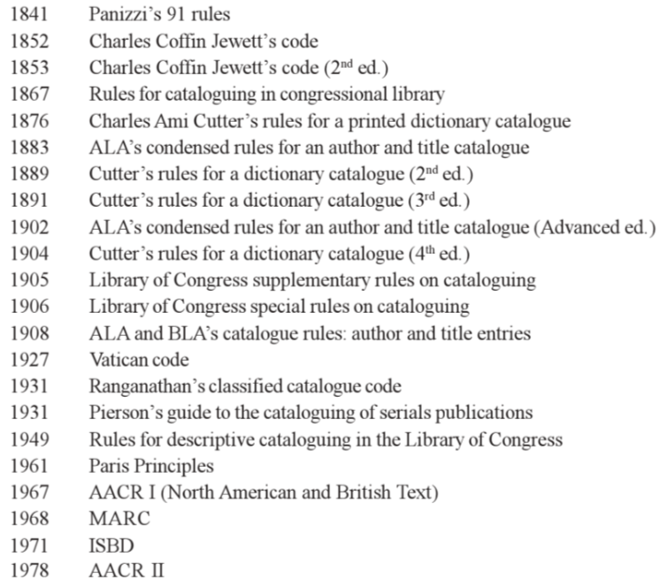
During this period the much-required agreed-to general format for bibliographic description could not be developed
IFLA first initiated the development of such a general format in the form of ISBD(G) under its Universal Bibliographic Control (UBC) program
Ranganathan applied scientific method to cataloguing & formulated normative principles of cataloguing called Canons of Cataloguing
These principles still serve as the basis for principles and rules of bibliographic description vis-a-vis cataloguing codes
The general principles for standards for biblio. descrp. are:
bibliographic description and their role
AACR2 adopted standards of ISBD for construction of catalogues of different types of materials and different sizes of libraries
ISBD defines 2 functions
A. Levels of Bibliographic Description - ISBD prescribes 8 areas of info. to be provided in cataloging but not all elements are necessary for cataloging every single document
- Title & statement of responsibility
- Edition
- Material (or type of publication) specifc details
- Publication distribution
- Physical Description
- Series
- Note
- Standard No. and terms of availabilityIt depends on the size of the library and info. needed to describe a particular document
AACR2 in its 0.26 Rules emphasized that “certain materials do not require every element of that standard”
Levels are provided to “constitute a maximum set of information”
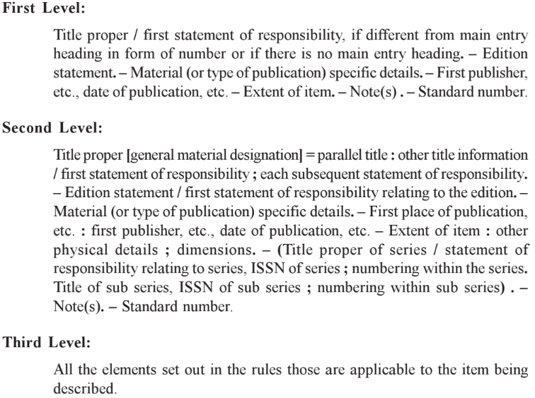
Title Proper: The rule directs to transcribe the title proper from the chief source of information exactly as to wording, order, and spelling, but not necessarily as to punctuation and capitalisation
Parallel Title: Generally a parallel title is the title
proper in another language and/or script recorded in the title and statement of responsibility area. It is transcribed and preceded by equal (=) sign
C. Rules for Statements of Responsibility
D. Rule for Edition Statements
E. Rule for Material Specific Details
F. Rule for Publication Distribution
G. Rule for Physical Description
It is started with a new paragraph from the second indentation of the card. If this area is not started with the new paragraph, then it will be preceded by a full stop-space-dash-space (. - )
This area consists of the number of pages of a single volume work, or the number of volumes and pages, information about the illustration, size, accompanying materials if any, and series note in that order
Info. about the illustration like charts, forms, genealogical tables, maps, music or portraits are recorded with the abbreviations ‘ill.’ preceded by a colon ( : ) and each particular kind of illus., if any, separated by a semicolon ( ; ). The size (dimension) of the work is recorded in whole cm. and preceded by a semicolon ( ; )
For example,
[10], 332p. : ill. ; maps ; 31 cm.
H. Rule for Series
It is recorded within the parentheses ‘( )’ immediately after the physical description, preceded by a full stop-space-dash-space (. - )
It consists of title proper of the series, statement of responsibility relating to the series, numbering of the series, sub series and more than one series statement and more than one series number
The statement of responsibility relating to the series is preceded by a space-forward slash-space ( / ) and its
numbering is preceded by semicolon
In case of the work belongs to the more than one series, the series should be recorded in the specific to general sequence within their own set of parentheses
For example,
. - ( Ranganathan Series in library science; 20)
I. Rule for Notes
Each note may be preceded by a full stop-space-dash-space (. - ) or started with new paragraph separately
Notes are given when it is found needed to explain or supplement information which cannot be included in the other areas
The sequence of information in the note section will be same as that of different areas of description
J. Rule for Standard Numbers
The standard number section must be preceded by a full stop-space-dash-space (. - ) or started with new paragraph
After the standard number a brief qualification is to be recorded when the work bears more than one standard number
For example,
ISBN 81-85273-16-2
Bibliographic formats have been created for two purposes – to facilitate search and retrieval of bibliographic records, locally and in network environment and to exchange bibliographic information among library and information centers
A bibliographic format that acts as a means of exchanging data has three basic components:
exchange of bibliographic data on magnetic tape and other storage media
Content Designators: Tags to define the different data elements of the records such as author, date of publication, title, so on. EG. MARC family (USMARC, CANMARC, UKMARC, UNIMARC, INDIMARC, MARC21 - combination of USMARC & CANMARC), CCF (Common Communication Format), others
Content: Rules & record that helps in formulation of data elements for different formats. EG. catalogue codes, ISBD
ISBD(ER) provides a long list of data elements for describing electronic resources & AARC2 guide the cataloguing of such resources
Some bibliographic formats are UNIMARC, MARC21 developed special field (Field 856) for managing electronic resources
Bibliographic formats & cataloguing codes are not enough for representing all unique characterstics of digital resources and therefore metadata standards have been developed as resource description schemas
Metadata is structured information that describes, explains, locates or otherwise makes it easier to retrieve, use or manage digital information resources
Metadata schemas are sets of metadata elements designed for a particular purpose, for example to describe a particular type of information resource
In addition to resource discovery, metadata schemas can help to organise electronic resource, facilitate interoperability & resource integration, support digital identification and ensure archiving and preservation
Text Encoding Initiative (TEI): It is a scheme for marking up electronic text. It also specifies a header portion to accommodate metadata about the object to be described. TEI headers can be used to record bibliographic information of both electronic and non-electronic sources
Online Information Exchange International (ONIX): ONIX is an XML-based metadata schema developed for publishing industry to response enormous growth in online books sales. It records basic bibliographic data along with trade data and promotional information
Functional Requirements for Bibliographic Records (FRBR) is an entity-relationship model framed by IFLA in 1998
It represents a generalised view of the bibliographic universe
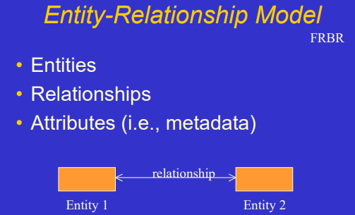
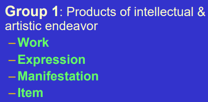
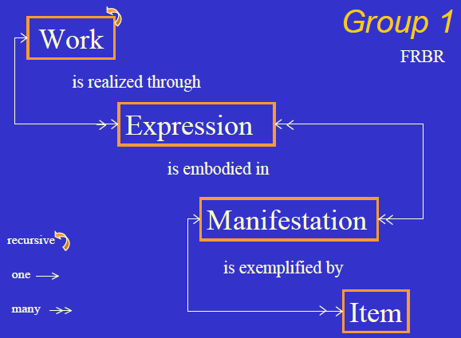
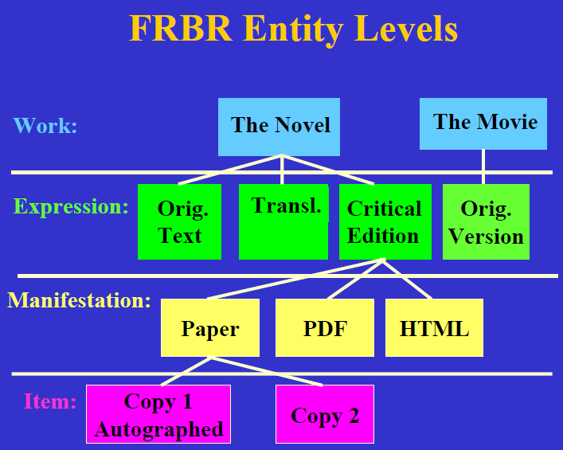
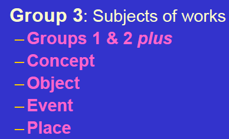
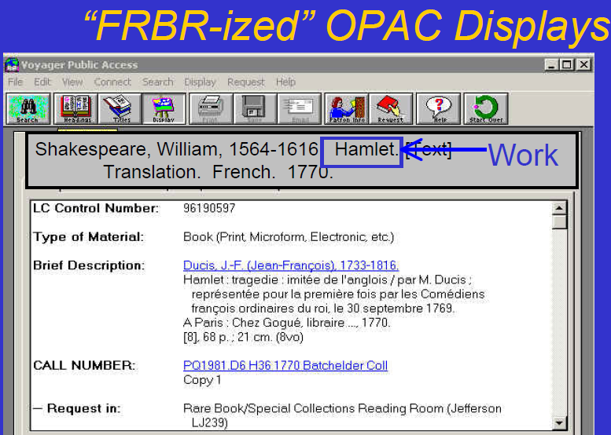
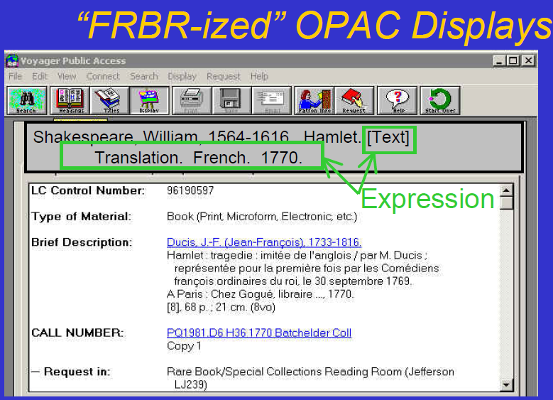
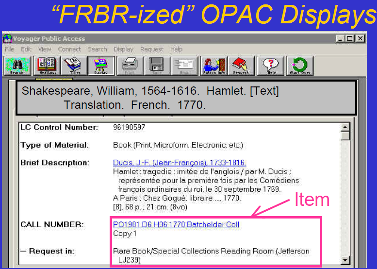
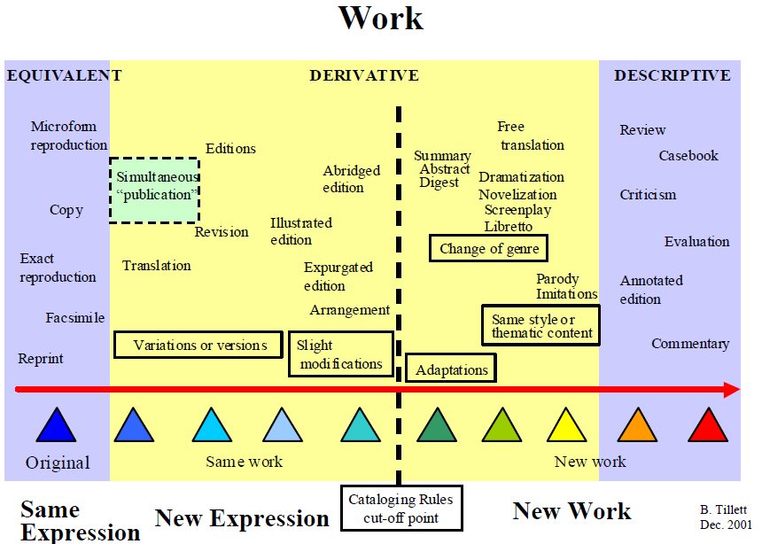
Bibliographic Framework provides a foundation for the future of bibliographic description, both on the web, and in the broader networked world that is grounded in Linked Data techniques
BIBFRAME was designed to replace the MARC21 formats while preserving a robust data exchange that has supported resource sharing and cataloging cost savings in recent decades
In 2012, LoC announced a new model called MARC Resources (MARCR) that developed a linked data alternative to MARC and released a more complete draft
of the model later that year, renamed BIBFRAME
(agent, subject, event) that relate to the core categories 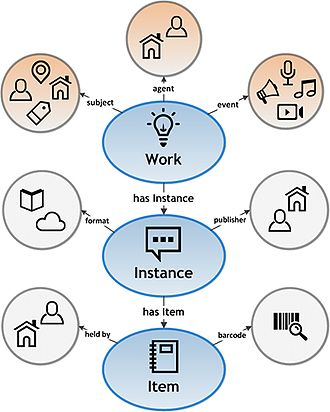
Work entity in BIBFRAME may be considered as the union of the disjoint work and expression entities of FRBR
BIBFRAME’s instance entity is analogous to the FRBR manifestation entity
This represents an apparent break with FRBR and the FRBR-based
Resource Description and Access (RDA) cataloging code
What is bibliographic description? Discuss contribution of institutions and information experts in development of bibliographic description tools
What you do you understand by ‘Bibliographic Format’?